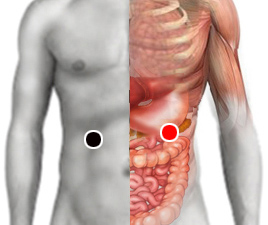

Cansancio
Pares
hígado - páncreas
estómago - páncreas
nervio inguinal - testículo
nervio inguinal (D) - útero

Generalidades:
Cansancio crónico: Muchos desórdenes del organismo pueden generar cansancio como:
Un rastreo completo ayudará a encontrar la(s) causa(s) del síntoma, así como la aplicación de éstos pares.